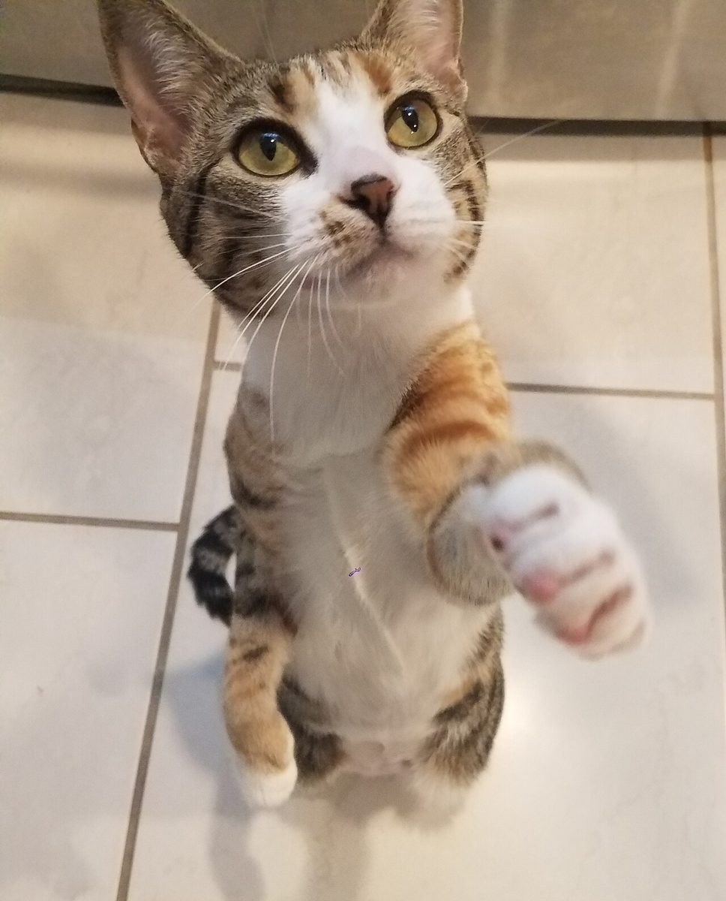
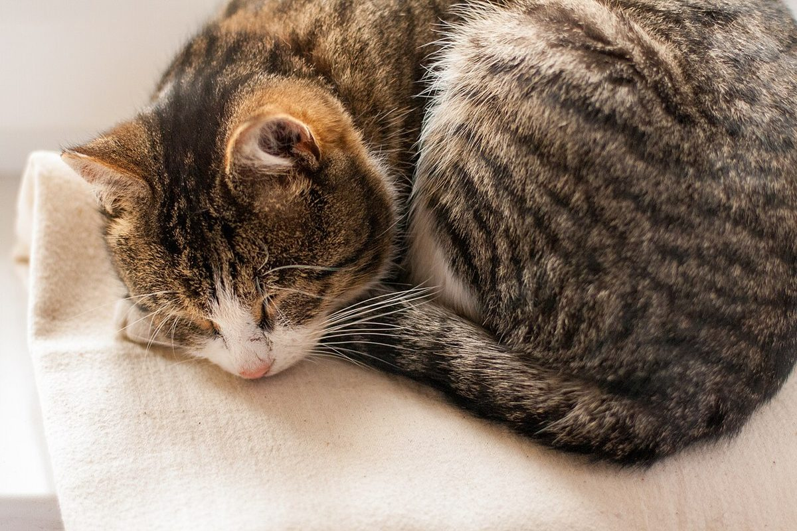
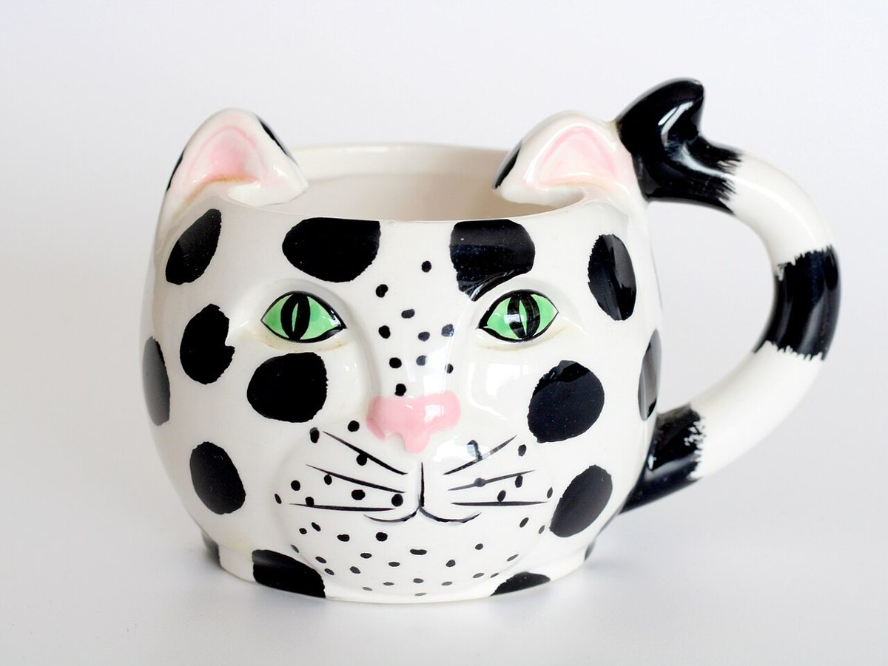
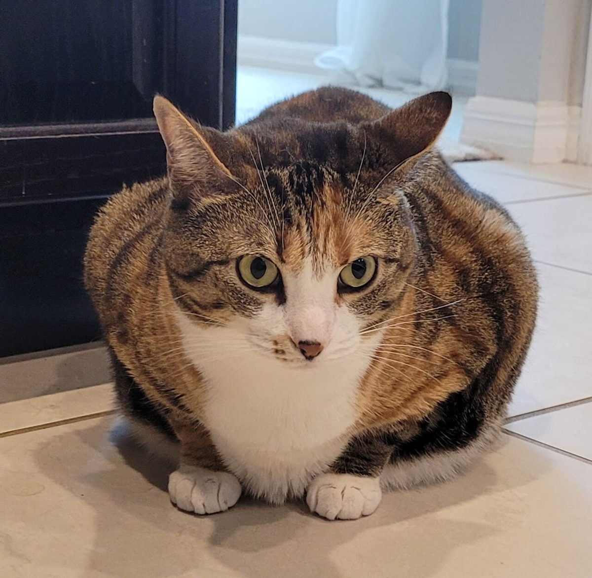

型1 渦
店のこと
お店について確認できているのは、所在地とInstagramのアカウントだけです。
このページの「想像してみる」部分は、制作側が想像して書いたものです。お店の実際の様子・考え・メニューとは関係がありません。
確認できていること
- 店名は「猫雑貨と喫茶 Tabby」、業種は猫雑貨も扱う喫茶
- 所在地は岩手県一関市三関神田２３−３(〒021-0821)
- 電話番号はなし。連絡はInstagramから
- 営業時間・定休日・メニュー・価格・ご予約・駐車場・取扱品は準備中

想像してみる
「Tabby」という名前から
由来は分かりません。制作側は、縞柄の猫のように、気ままで愛らしい空気のお店かもしれない、と想像しました。喫茶に猫雑貨が加わるので、猫好きの方が足を止めたくなる場所かもしれません(実際のお店の姿ではありません)。


